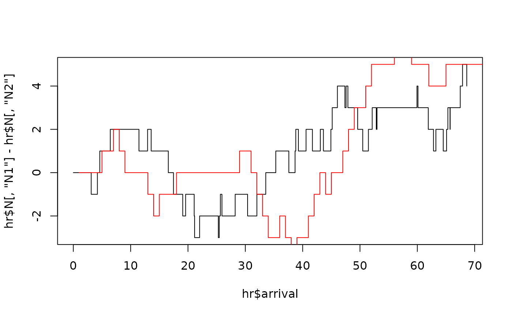

This is a generic function named hfit designed for estimating the parameters
of the exponential Hawkes model. It is implemented as an S4 method for two main reasons:
Usage
hfit(
object,
inter_arrival = NULL,
type = NULL,
mark = NULL,
N = NULL,
Nc = NULL,
lambda_component0 = NULL,
N0 = NULL,
mylogLik = NULL,
reduced = TRUE,
grad = NULL,
hess = NULL,
constraint = NULL,
method = "BFGS",
verbose = FALSE,
...
)
# S4 method for class 'hspec'
hfit(
object,
inter_arrival = NULL,
type = NULL,
mark = NULL,
N = NULL,
Nc = NULL,
lambda_component0 = NULL,
N0 = NULL,
mylogLik = NULL,
reduced = TRUE,
grad = NULL,
hess = NULL,
constraint = NULL,
method = "BFGS",
verbose = FALSE,
...
)Arguments
- object
An
hspec-classobject containing the parameter values.- inter_arrival
A vector of inter-arrival times for events across all dimensions, starting with zero.
- type
A vector indicating the dimensions, represented by numbers like 1, 2, 3, etc., starting with zero.
- mark
A vector of mark (jump) sizes, starting with zero.
- N
A matrix representing counting processes.
- Nc
A matrix of counting processes weighted by mark sizes.
- lambda_component0
Initial values for the lambda component \(\lambda_{ij}\). Can be a numeric value or a matrix. Must have the same number of rows and columns as
alphaorbetainobject.- N0
Initial values for the counting processes matrix
N.- mylogLik
A user-defined log-likelihood function, which must accept an
objectargument consistent withobject.- reduced
Logical; if
TRUE, performs reduced estimation.- grad
A gradient matrix for the likelihood function. Refer to
maxLikfor more details.- hess
A Hessian matrix for the likelihood function. Refer to
maxLikfor more details.- constraint
Constraint matrices. Refer to
maxLikfor more details.- method
The optimization method to be used. Refer to
maxLikfor more details.- verbose
Logical; if
TRUE, prints the progress of the estimation process.- ...
Additional parameters for optimization. Refer to
maxLikfor more details.
Value
maxLik object
Details
Model Representation: To represent the structure of the model as an hspec object.
The multivariate marked Hawkes model has numerous variations, and using an S4 class
allows for a flexible and structured approach.
Optimization Initialization: To provide a starting point for numerical optimization.
The parameter values assigned to the hspec slots serve as initial values for the optimization process.
This function utilizes the maxLik package for optimization.
Examples
# example 1
mu <- c(0.1, 0.1)
alpha <- matrix(c(0.2, 0.1, 0.1, 0.2), nrow=2, byrow=TRUE)
beta <- matrix(c(0.9, 0.9, 0.9, 0.9), nrow=2, byrow=TRUE)
h <- new("hspec", mu=mu, alpha=alpha, beta=beta)
res <- hsim(h, size=100)
summary(hfit(h, inter_arrival=res$inter_arrival, type=res$type))
#> --------------------------------------------
#> Maximum Likelihood estimation
#> BFGS maximization, 29 iterations
#> Return code 0: successful convergence
#> Log-Likelihood: -254.9788
#> 4 free parameters
#> Estimates:
#> Estimate Std. error t value Pr(> t)
#> mu1 0.09695 0.01757 5.516 3.46e-08 ***
#> alpha1.1 0.15718 0.08558 1.837 0.06627 .
#> alpha1.2 0.31494 0.11789 2.671 0.00755 **
#> beta1.1 1.06750 0.34479 3.096 0.00196 **
#> ---
#> Signif. codes: 0 ‘***’ 0.001 ‘**’ 0.01 ‘*’ 0.05 ‘.’ 0.1 ‘ ’ 1
#> --------------------------------------------
# example 2
# \donttest{
mu <- matrix(c(0.08, 0.08, 0.05, 0.05), nrow = 4)
alpha <- function(param = c(alpha11 = 0, alpha12 = 0.4, alpha33 = 0.5, alpha34 = 0.3)){
matrix(c(param["alpha11"], param["alpha12"], 0, 0,
param["alpha12"], param["alpha11"], 0, 0,
0, 0, param["alpha33"], param["alpha34"],
0, 0, param["alpha34"], param["alpha33"]), nrow = 4, byrow = TRUE)
}
beta <- matrix(c(rep(0.6, 8), rep(1.2, 8)), nrow = 4, byrow = TRUE)
impact <- function(param = c(alpha1n=0, alpha1w=0.2, alpha2n=0.001, alpha2w=0.1),
n=n, N=N, ...){
Psi <- matrix(c(0, 0, param['alpha1w'], param['alpha1n'],
0, 0, param['alpha1n'], param['alpha1w'],
param['alpha2w'], param['alpha2n'], 0, 0,
param['alpha2n'], param['alpha2w'], 0, 0), nrow=4, byrow=TRUE)
ind <- N[,"N1"][n] - N[,"N2"][n] > N[,"N3"][n] - N[,"N4"][n] + 0.5
km <- matrix(c(!ind, !ind, !ind, !ind,
ind, ind, ind, ind,
ind, ind, ind, ind,
!ind, !ind, !ind, !ind), nrow = 4, byrow = TRUE)
km * Psi
}
h <- new("hspec",
mu = mu, alpha = alpha, beta = beta, impact = impact)
hr <- hsim(h, size=100)
plot(hr$arrival, hr$N[,'N1'] - hr$N[,'N2'], type='s')
lines(hr$N[,'N3'] - hr$N[,'N4'], type='s', col='red')

fit <- hfit(h, hr$inter_arrival, hr$type)
summary(fit)
#> --------------------------------------------
#> Maximum Likelihood estimation
#> BFGS maximization, 536 iterations
#> Return code 0: successful convergence
#> Log-Likelihood: 151462335
#> 12 free parameters
#> Estimates:
#> Estimate Std. error t value Pr(> t)
#> mu1 0.6168 Inf 0 1
#> mu3 1.0282 Inf 0 1
#> alpha11 -0.3793 Inf 0 1
#> alpha12 0.2063 Inf 0 1
#> alpha33 -0.3971 Inf 0 1
#> alpha34 4.5896 Inf 0 1
#> beta1.1 3.2418 Inf 0 1
#> beta3.1 4.1924 Inf 0 1
#> alpha1n -0.2743 Inf 0 1
#> alpha1w 0.1919 Inf 0 1
#> alpha2n -166.3773 Inf 0 1
#> alpha2w 88.3993 Inf 0 1
#> --------------------------------------------
# }
# example 3
# \donttest{
mu <- c(0.15, 0.15)
alpha <- matrix(c(0.75, 0.6, 0.6, 0.75), nrow=2, byrow=TRUE)
beta <- matrix(c(2.6, 2.6, 2.6, 2.6), nrow=2, byrow=TRUE)
rmark <- function(param = c(p=0.65), ...){
rgeom(1, p=param[1]) + 1
}
impact <- function(param = c(eta1=0.2), alpha, n, mark, ...){
ma <- matrix(rep(mark[n]-1, 4), nrow = 2)
alpha * ma * matrix( rep(param["eta1"], 4), nrow=2)
}
h1 <- new("hspec", mu=mu, alpha=alpha, beta=beta,
rmark = rmark,
impact=impact)
res <- hsim(h1, size=100, lambda_component0 = matrix(rep(0.1,4), nrow=2))
fit <- hfit(h1,
inter_arrival = res$inter_arrival,
type = res$type,
mark = res$mark,
lambda_component0 = matrix(rep(0.1,4), nrow=2))
summary(fit)
#> --------------------------------------------
#> Maximum Likelihood estimation
#> BFGS maximization, 42 iterations
#> Return code 0: successful convergence
#> Log-Likelihood: -190.6365
#> 5 free parameters
#> Estimates:
#> Estimate Std. error t value Pr(> t)
#> mu1 0.10451 0.02317 4.511 6.47e-06 ***
#> alpha1.1 0.58529 0.22336 2.620 0.00878 **
#> alpha1.2 0.55657 0.21186 2.627 0.00861 **
#> beta1.1 1.96148 0.62768 3.125 0.00178 **
#> eta1 0.07090 0.26025 0.272 0.78530
#> ---
#> Signif. codes: 0 ‘***’ 0.001 ‘**’ 0.01 ‘*’ 0.05 ‘.’ 0.1 ‘ ’ 1
#> --------------------------------------------
# }
# For more information, please see vignettes.